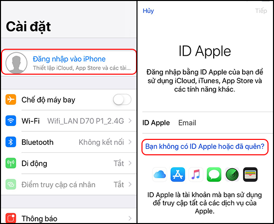
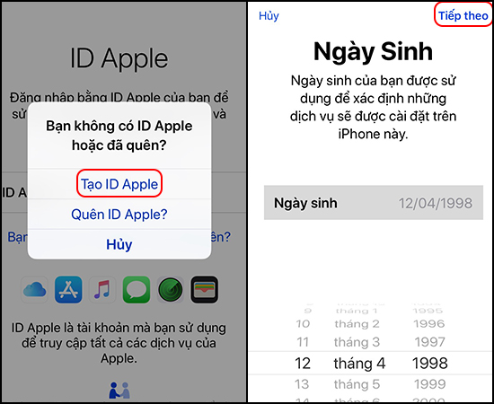
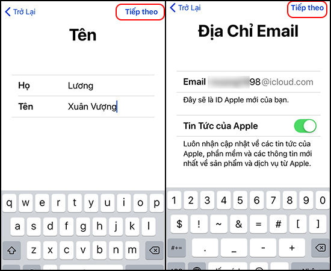
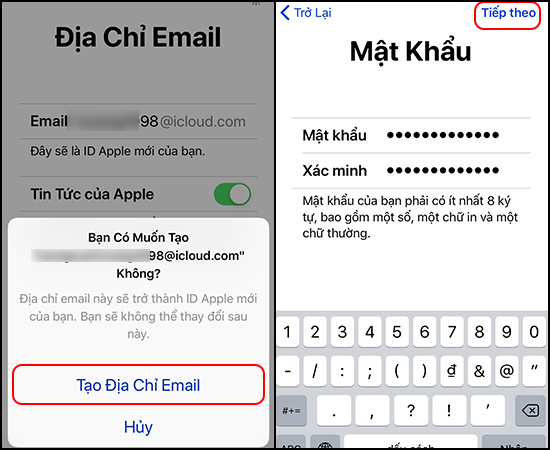
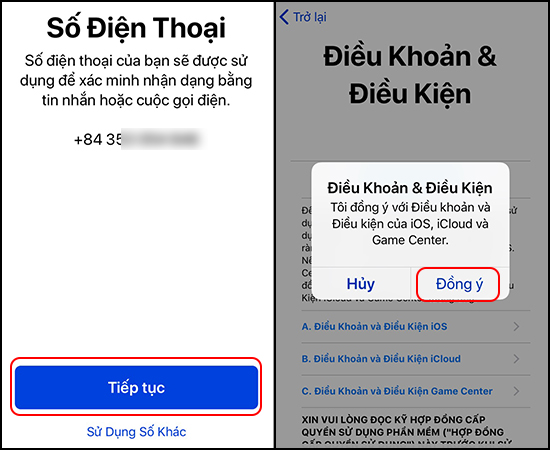

Hướng dẫn tạo tài khoản ID Apple và iCloud miễn phí
Hướng dẫn cách tạo tài khoản ID Apple, iCloud miễn phí trên iPhone
Để tải được game, ứng dụng iOS và sử dụng tính năng trên iPhone, iPad, bạn cần tạo tài khoản ID Apple, iCloud. Bài viết này sẽ hướng dẫn bạn cách tạo tài khoản ID Apple, iCloud miễn phí nhé!
1. Lợi ích của việc tạo tài khoản ID Apple, iCloud miễn phí
- Giúp bạn tải game, app và sử dụng các tính năng trên iPhone/ iPad.
- Trải nghiệm đầy đủ tính năng do Apple cung cấp.
2. Hướng dẫn cách tạo tài khoản ID Apple, iCloud miễn phí
Hướng dẫn nhanh: Chọn Đăng nhập vào iPhone > Tạo ID Apple > Nhập thông tin người dùng > Nhập ID muốn tạo > Nhập Mật khẩu > Xác minh số điện thoại > Đồng ý điều khoản.
- Bước 1: Chọn Đăng nhập vào iPhone
Đầu tiên, tại màn hình chính của điện thoại, bạn chọn Cài đặt > Đăng nhập vào iPhone > Chọn Bạn không có ID Apple hoặc đã quên? để tiến hành tạo ID Apple.

- Bước 2: Tạo ID Apple
Chọn Tạo ID Apple > Chọn Ngày sinh > Chọn Tiếp theo.

- Bước 3: Nhập thông tin tạo ID
Nhập Họ, Tên > Chọn Tiếp theo > Nhập ID muốn tạo vào vị trí Email > Chọn Tiếp theo.

- Bước 4: Tạo Địa chỉ Email
Chọn Tạo địa chỉ Email > Nhập và xác minh mật khẩu > Chọn Tiếp theo.

- Bước 5: Hoàn thành đăng ký
Xác minh số điện thoại > Chọn Đồng ý với Điều Khoản & Điều Kiện là hoàn tất.

Như vậy, với vài thao tác đơn giản, bạn đã có thể tạo tài khoản ID Apple, iCloud miễn phí. Hy vọng bài viết này sẽ giúp ích cho bạn!
Sản phẩm iPhone đang được kinh doanh tại Thế Giới Di Động: